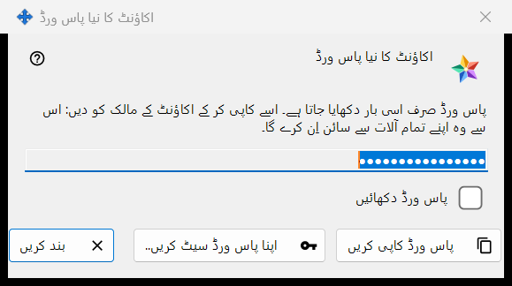
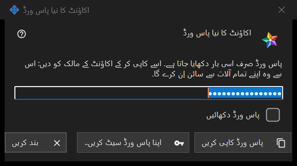

اکاؤنٹ کا نیا پاس ورڈ
یہ کس مقصد کے لیے ہے
ایکسچینج سرور کے اکاؤنٹ کا پاس ورڈ دکھاتا یا مانگتا ہے، تین صورتوں میں: بنایا گیا پاس ورڈ، جو پروگرام نے ابھی بنایا ہے، صرف ایک بار دکھایا جاتا ہے (تصویر میں یہی ہے)؛ لکھا گیا پاس ورڈ، جس میں آپ سے آپ کا اپنا پاس ورڈ مانگا جاتا ہے؛ اور محفوظ پاس ورڈ، جو اس پی سی پر رکھا ہوا پاس ورڈ دکھاتا ہے۔ یہ ونڈو Share Manager میں مقامی ایکسچینج سرور کی ترتیبات میں اکاؤنٹ شامل کریں.. یا پاس ورڈ ری سیٹ کریں.. یا مشترکہ پاس ورڈ سیٹ کریں.. کے بعد کھلتی ہے، اور منتظم کے پاس ورڈ کے سوالات سے بھی۔


اس ترتیب میں
- بنایا گیا پاس ورڈ: پاس ورڈ کاپی کریں دبائیں (پڑھنے کے لیے پاس ورڈ دکھائیں پر نشان لگائیں)، پاس ورڈ اکاؤنٹ کے مالک کو دیں اور بند کریں دبائیں۔
- اپنا پاس ورڈ: اپنا پاس ورڈ سیٹ کریں.. دبائیں یا پاس ورڈ خود لکھوں گا منتخب کریں، قاعدے پر پورا اترنے والا پاس ورڈ لکھیں اور پاس ورڈ محفوظ کریں دبائیں۔
- محفوظ پاس ورڈ: اکاؤنٹ منتخب کریں اور فہرست میں پاس ورڈ دکھائیں.. دبائیں۔
عناصر
بنایا گیا پاس ورڈ (تصویر میں)
عنوان: اکاؤنٹ کا نیا پاس ورڈ۔ تعارفی متن کہتا ہے: پاس ورڈ صرف اسی بار دکھایا جاتا ہے۔ اسے کاپی کر کے اکاؤنٹ کے مالک کو دیں: اس سے وہ اپنے تمام آلات سے سائن اِن کرے گا۔ فیلڈ چھپی ہوئی اور صرف پڑھنے کے لیے ہے؛ پاس ورڈ دکھائیں اسے صرف اسی ونڈو میں ظاہر کرتا ہے۔ پاس ورڈ کاپی کریں پاس ورڈ کو ایک محفوظ راستے سے کلپ بورڈ پر رکھتا ہے جو اسے Windows کی کلپ بورڈ ہسٹری اور کلاؤڈ کلپ بورڈ سے باہر رکھتا ہے، اور جواب دیتا ہے: پاس ورڈ کاپی ہو گیا۔ ونڈو بند ہونے پر فیلڈ خالی کر دیا جاتا ہے۔
کاپی کیے بغیر بند کرنا
اگر آپ ایسا بنایا گیا پاس ورڈ بند کریں جسے آپ نے نہ کاپی کیا نہ دکھایا، تو پروگرام پوچھتا ہے: پاس ورڈ کاپی کیے بغیر بند کریں؟ اور بتاتا ہے کہ اسے دوبارہ نہیں دکھایا جا سکتا - بعد میں اسے صرف ری سیٹ کیا جا سکتا ہے۔ ڈیفالٹ جواب: نہیں۔ اگر پاس ورڈ اس پی سی پر محفوظ ہے تو کوئی سوال نہیں پوچھا جاتا۔
اپنا پاس ورڈ سیٹ کریں..
اکاؤنٹ کی ونڈو، مشترکہ دعوت نامہ پاس ورڈ کی ونڈو اور ایڈمنسٹریٹر پاس ورڈ کی ونڈو سے استعمال ہوتا ہے: بنایا گیا پاس ورڈ استعمال کیے بغیر یہ ونڈو بند کرتا ہے اور دوبارہ پاس ورڈ مانگتا ہے، اس بار وہ جو آپ خود لکھتے ہیں؛ وہ بنائے گئے پاس ورڈ کی جگہ لے لیتا ہے۔
لکھا گیا پاس ورڈ
عنوان: اکاؤنٹ کا پاس ورڈ، لیبل: پاس ورڈ:، ایک چھپا ہوا فیلڈ اور پاس ورڈ دکھائیں۔ اشارہ: کم از کم 10 حروف، جن میں ایک لاطینی بڑا حرف، ایک چھوٹا حرف اور ایک ہندسہ ہو۔ لکھتے وقت انتباہ کی لائن بتاتی ہے کہ کیا کم ہے، مثلاً: کم از کم ایک ہندسہ ضروری ہے۔ پاس ورڈ محفوظ کریں قاعدے پر پورا نہ اترنے والا پاس ورڈ قبول نہیں کرتا؛ جو پورا اترتا ہے وہ اس ونڈو کو لوٹ جاتا ہے جس نے اسے مانگا تھا، اور آخری فیصلہ پھر بھی سرور کا ہے۔
محفوظ پاس ورڈ
عنوان میں اکاؤنٹ کا پاس ورڈ کے ساتھ لاگ اِن جُڑ جاتا ہے۔ ونڈو اس پی سی پر رکھا پاس ورڈ صرف پڑھنے کے لیے دکھاتی ہے، پاس ورڈ دکھائیں اور پاس ورڈ کاپی کریں کے ساتھ؛ بند کرتے وقت کچھ نہیں پوچھا جاتا۔ یہ اکاؤنٹس کی فہرست میں پاس ورڈ دکھائیں.. سے کھلتی ہے، جو تب ہی نظر آتا ہے جب اس پی سی پر اکاؤنٹس کے پاس ورڈ محفوظ رکھیں سوئچ آن ہو۔ یہ سوئچ ڈیفالٹ طور پر بند رہتا ہے؛ آن کرتے وقت پہلے پوچھا جاتا ہے، اور پھر پاس ورڈ آپ کے Windows اکاؤنٹ کے لیے خفیہ کر کے محفوظ کیا جاتا ہے، جسے اس اکاؤنٹ کے تحت چلنے والا کوئی بھی پروگرام پڑھ سکتا ہے۔ سوئچ آن کرنے سے پہلے سیٹ کیا گیا پاس ورڈ محفوظ نہیں کیا جاتا۔
مینیجر کی ترتیبات · SFTP اشتراک کی ترتیبات · ایکسچینج سرور کی ترتیبات